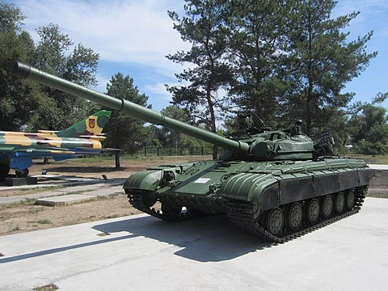

Перелік українських танків:
- Т-55АГМ — сучасний український варіант модернізації танків Т-54, Т-55, Т-62 і Тип 59
- Т-64
- Т-64БВ — модифікація радянського основного бойового танку Т-64
- Т-64БМ «Булат» — український основний бойовий танк
- Т-64БМ2 «Булат» — український основний бойовий танк, є модернізацією Т-64БМ2
- Т-64Е — являє собою глибоку модернізацію Т-64
- Т-84
- Т-84 «Оплот» - на основі танку T-84
- T-84-120 «Ятаган» — версія танку Т-84 «Оплот», адаптована до стандартів НАТО.
Т-55АГМ

Т-55АГМ — сучасний український варіант модернізації танків Т-54, Т-55, Т-62 і Тип 59.
Поглиблена модернізація бойового відділення дозволяє за бажанням замовників встановлювати новітні гармати калібру 120 або 125-мм. Більшість танків озброєні новітньою 120-мм гарматою КБМ2, модернізованим варіантом КБМ1 спеціально для боєприпасів бронетехніки країн НАТО. Гармата може вести вогонь усіма видами снарядів: керованими ракетами «Комбат», осколково-фугасними, осколково-шрапнельних снарядами, бронебійними і кумулятивними снарядами. Дальність стрільби звичайними снарядами становить від 2000 до 3000 метрів, ракетами — до 5000 метрів (ймовірність влучання 80 %). Завдяки автомату заряджання скорострільність машини досягає 8 пострілів на хвилину, а екіпаж скорочений до трьох осіб.
читати далі ...Т-64
Т-64 — сімейство основних бойових танків, що випускалися серійно в СРСР з 1963 по 1987 рік. За цей час було створено близько трьох десятків різних модифікацій танка. Роботи над створенням танка розпочалися в Харкові в 1951 році під керівництвом Олександра Морозова[1]. Перша модифікація — «середній танк Т-64» (об'єкт 432) була прийнята на озброєння в січні 1967 року, модифікація Т-64А (об'єкт 434) стала першим основним бойовим танком Радянського Союзу.
читати далі ...Т-64БВ

Т-64БВ — модифікація радянського основного бойового танку Т-64. Її випуск тривав з 1984 по 1987 рік. Ця модель отримала динамічний захист «Контакт», посилений протирадіаційний захист.
Танк Т-64БВ разом з Т-64Б складає основу танкових військ Сухопутних військ України, понад 600 одиниць.
З огляду на виклики, які постали перед Україною внаслідок збройної агресії з боку Росії, були посилені роботи над подальшою модернізацією танків Т-64 (і Т-64БВ).
В лютому 2022 року державне підприємство «Харківський бронетанковий завод» повідомило про випробування нової модернізації танка Т-64БВ зразка 2022 року.
читати далі ...